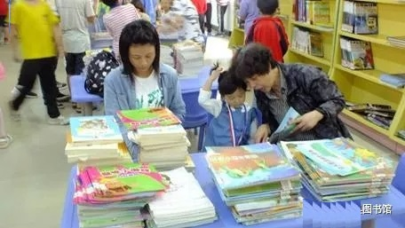

2019年6月7日是中国的传统佳节——端午，在节日里，汉寿县图书馆为刚度过“六一”儿童节的小朋友又奉上丰富的文化大餐。
在少儿图书馆借阅室的阅览桌上，摆放着五颜六色各类新到馆的少儿图书，大一点的小朋友们自行挑选自己喜爱的图书认真阅读或拿着挑好的图书直接办理外借手续；小一点的小朋友们则在爸爸妈妈或爷爷奶奶的辅导下，晃着脑袋、瞪着眼睛、边看图书、边听着大人解释，不时发出开心的笑声。
为了让孩子们欢快的度过中国传统的端午节，吸引孩子们走进图书馆，汉寿县图书馆在5月中旬就采购了近3000册各类少儿新书以及介绍中华民族风情的优秀文化书籍，并通过宣传显示屏、公众微信号、朋友圈等方式，广泛宣传图书馆开展新书展示讯息。
近几年来，汉寿县图书馆在少儿阅读推广上重下功夫，每年都开展形式多样，趣味多样的各类读书活动，吸引广大少年儿童来图书馆看书学习、参加阅读活动，让学生们在课余、节假日里读好书，开阔视野，陶冶情操。